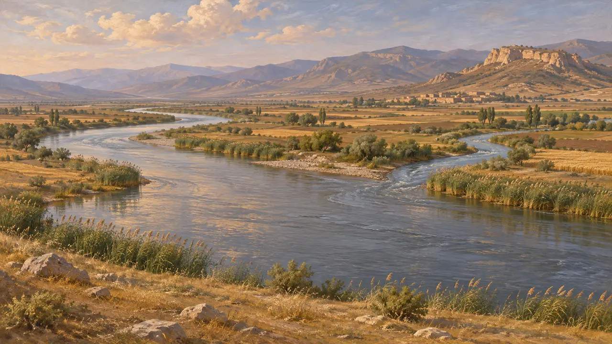
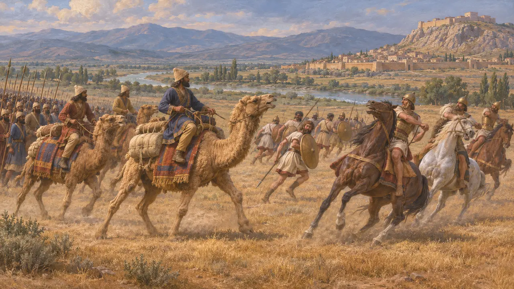
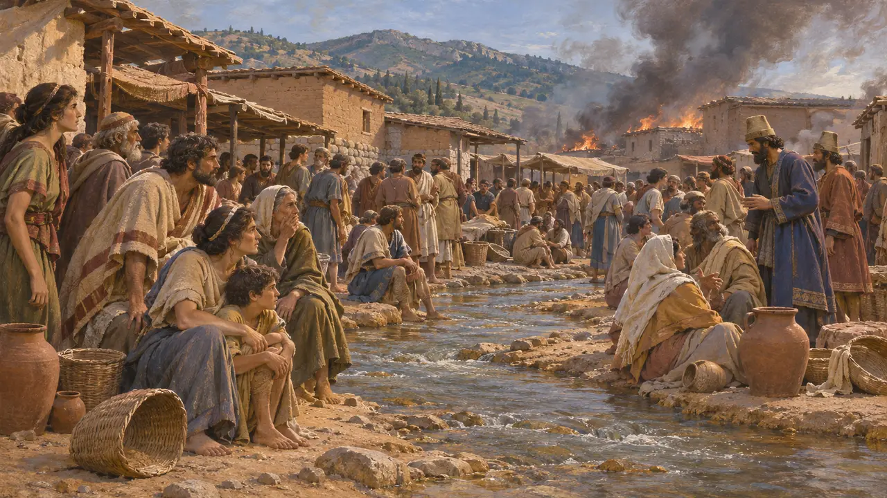
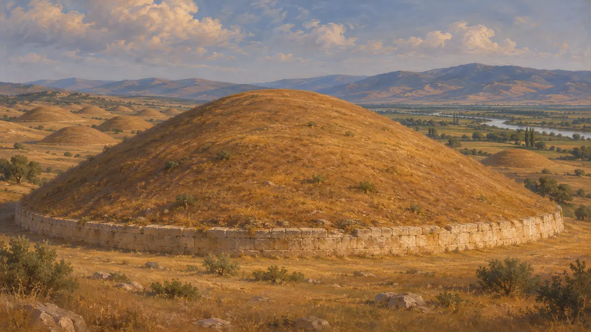

El río Hermo
El gran río de Lidia, en cuya llanura se alza Sardes, siglos VI-V a. e. c.
El Hermo, hoy llamado Gediz, es el río más grande de Lidia. Fluye hacia el oeste, pasa por Sardes y desemboca en el mar cerca de Focea; el Pactolo se le une por debajo de la ciudad. Su amplia llanura alimentó a Sardes, y allí los camellos de Ciro pusieron en fuga a la caballería de Creso hacia el 547 a. e. c.
En el juego: El Hermo es el río del nivel de Sardes: su llanura es la tierra de cultivo del nivel, y sus barqueros y sus higos aparecen en las conversaciones.

El río de la llanura
Relato antiguoHeródoto describe la llanura que se extiende ante Sardes como ancha y abierta, surcada por ríos, entre ellos el Hilo, que desembocan en el mayor de todos, el Hermo. Dice que el Hermo baja del monte consagrado a la Madre de Díndimo y desemboca en el mar junto a Focea.
Herodotus 1.80

La batalla en la llanura
Relato antiguoEn aquella llanura, dice Heródoto, Ciro puso hombres sobre los camellos de su bagaje delante de su ejército, por consejo de Hárpago. Los caballos lidios no soportaron el olor ni la vista de los camellos y giraron grupas, y los lidios combatieron a pie y fueron empujados hasta Sardes.
Herodotus 1.80

El Pactolo y el mercado
Relato antiguoEl Pactolo atravesaba el mercado de Sardes y arrastraba polvo de oro desde el Tmolo, y después desembocaba en el Hermo, que seguía su curso hasta el mar. En 498 a. e. c. las personas atrapadas por el incendio se reunieron en el mercado y a lo largo del Pactolo.
Herodotus 5.101

Las tumbas reales que se alzan sobre él
En los documentosAl norte del Hermo se extiende la gran necrópolis lidia de Bin Tepe, con el túmulo que Heródoto llama la tumba de Aliates, padre de Creso, uno de los mayores túmulos del mundo antiguo. Su base de tierra y piedra se conserva, tal como la describe.
Herodotus 1.93; excavations at Bin Tepe
Fuentes
- Herodotus 1.80, 1.93, 5.101
- C. H. Greenewalt and others, excavations at Sardis